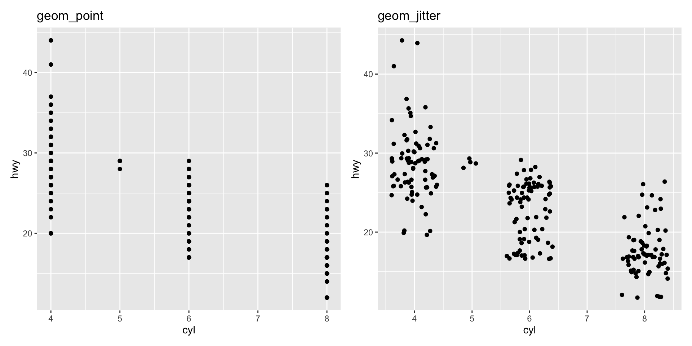
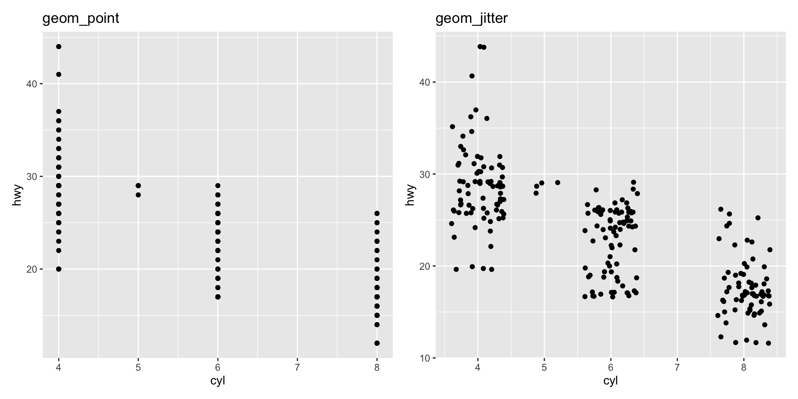
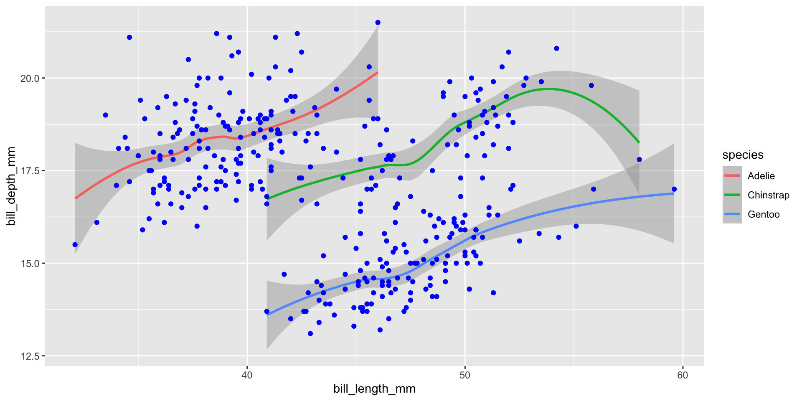
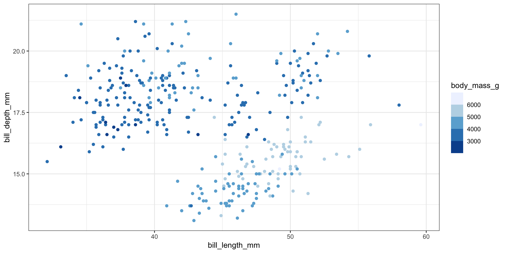
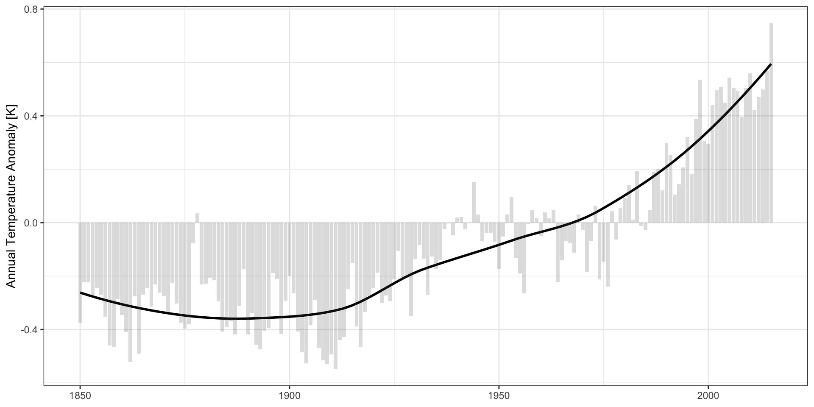
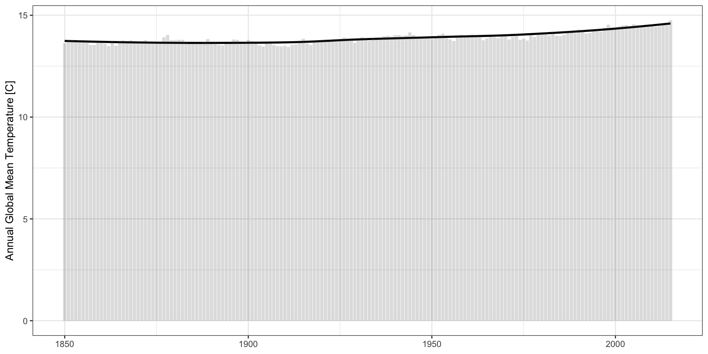
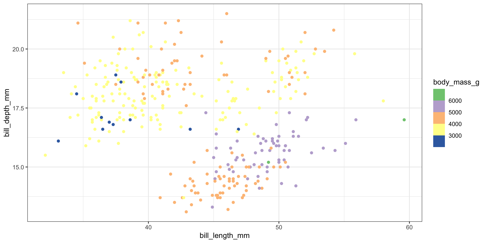
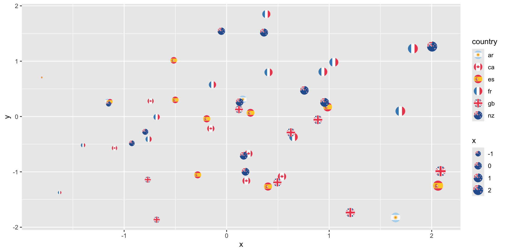

STA 9750 - Week 7
STA 9750 Mini-Project #01
Grades returned this afternoon.
Review regrade policy and late work policy if you have questions.
STA 9750 Mini-Project #02
MP#02 - Hollywood Movies – Due October 23rd
- GitHub post (used for peer feedback) AND Brightspace
- Start early to avoid Git issues
Pay attention to the rubric
- Writing and presentation are about 50% of your grade
- Evaluated on rigor and thoughtfulness
- Use what you learned from MP#01
- Pre-processed data now available as well
Upcoming Mini-Projects
Tentative Topics
- MP#03: Political Analysis
- MP#04: Retirement Forecasting
Course Project
Proposal feedback soon (need to do 2 more before releasing)
Pre-Assignments
Brightspace - Wednesdays at 11:45
- Reading, typically on course website
- Brightspace auto-grades
- I have to manually change to completion grading
Next pre-assignment is October 23rd
Thank you for FAQs and (honest) team feedback. Keep it coming!
Course Support
- Synchronous
- Office Hours 4x / week
- MW Office Hours on Monday + Thursday for rest of semester
- CR Tuesday + Friday
- No OH during Thanksgiving break
- Office Hours 4x / week
- Asynchronous
- Piazza (\(<30\) minute average response time)
Upcoming Week
Due Wednesday at 11:45pm:
- Pre-Assignment #08 (Brightspace)
- Advanced plotting with
ggplot2
- Advanced plotting with
- MP #02 on GitHub AND Brightspace
Additional Resources
- C. Wilke. Fundamentals of Data Visualization
- K. Healy. Data Visualization
- H. Wickham
ggplot2: Elegant Visualizations for Data Analysis
- B. Yu and R. Barter Veridical Data Science
Pre-Assignment #07 FAQs
FAQ: ggplot2 vs Tableau
- Tableau
- $$$
- IT department automatically integrates with data sources
- Easy, if it does what you want
ggplot2- Free
- Can use arbitrary data sources, with effort
- Flexible / customizable
FAQ: ggplot2 vs matplotlib
ggplot2- Data visualizations
- Enforces “good practice” via
gg
matplotlib- Scientific visualizations
- More flexible for good or for ill
- Inspired by
Matlabplotting
Closest Python analogue to ggplot2 is seaborn
FAQ: Why use + instead of |>
ggplot2is older than|>- Per H. Wickham: if
ggplot3ever gets made, will use|> - Unlikely to change: too much code depends on it
FAQ: Performance
I tried an interactive plot with \(n=132,000\) points, but it brought my computer to a halt. [Ed. Paraphrased]
That’s a lot of plots!!
ggplot2 is itself pretty fast, but it depends on (possibly slow) graphics backends
- Different file types implement graphics differently.
- You should also think about overplotting / pre-processing
FAQ: Overplotting
Large data sets can lead to overplotting:
- Points “on top of” each other
- Can also occur with “designed” experiments / rounded data
Ways to address:
geom_jittergeom_hex
FAQ: Overplotting
Jitter: add a bit of random noise so points don’t step on each other
FAQ: Hexagonal Binning
Little “heatmaps” of counts. Hexagons to avoid weird rounding artifacts
FAQ: Inside vs. Outside aes()
aes maps data to values. Outside of aes, set constant value
FAQ: Inside vs. Outside aes()
aes maps data to values. Outside of aes, set constant value
FAQ: Global vs geom_ specific aes()
- Elements set in
ggplot()apply to entire plot - Elements set in specific
geomapply there only- Override globals
FAQ: How to choose plot types
Two “modes”
- Exploratory data analysis. Quick, rapid iteration, for your eyes only
- Let the data tell you a story
- Low pre-processing: scatter plots, lines, histograms
- “Publication quality”. Polished,
- You tell the reader a story
- More processing, more modeling: trends, line segments, ribbons
FAQ: Color Palettes
Three types of color palettes:
- Sequential: ordered from 0 to “high”
- Example: rain forecast in different areas
- Diverging: ordered from -X to +X with meaningful 0 in the middle
- Example: political leaning
- Qualitative: no ordering
When mapping quantitative variables to palettes (sequential/diverging), two approaches:
- Binned: \([0, 1)\) light green, \([1, 3)\) medium green; \([3, 5]\) dark green
- Continuous
FAQ: Color Palettes
FAQ: Color Palettes
FAQ: Color Palettes
FAQ: Color Palettes
FAQ: Color Palettes
FAQ: How to “hard-code” colors
library(dplyr)
data <- data.frame(x = rnorm(5),
y = rnorm(5),
group = c("a", "a", "b", "b", "b"))
data |>
group_by(group) |>
mutate(n_count = n()) |>
ungroup() |>
mutate(color = ifelse(n_count == max(n_count), "red", "black")) |>
ggplot(aes(x=x, y=y, shape=group, color=color)) +
geom_point() +
scale_color_identity()FAQ: How to Customize Themes
Built-in themes + ggthemes package:
library(ggplot2); library(ggthemes);
library(palmerpenguins); library(ggpmisc)
p <- ggplot(penguins,
aes(x=flipper_length_mm,
y=body_mass_g,
color=species)) +
geom_point() +
stat_poly_line(se=FALSE,
color="black") +
stat_poly_eq() +
xlab("Flipper Length (mm)") +
ylab("Body Mass (g)") +
scale_color_brewer(type="qual",
palette=2,
name="Species") +
facet_wrap(~species)FAQ: Themes
Default theme (ggplot2::theme_grey()):
FAQ: Themes
Black and White theme (ggplot2::theme_bw()):
FAQ: Themes
Minimal theme (ggplot2::theme_minimal()):
FAQ: Themes
Light theme (ggplot2::theme_light()):
FAQ: Themes
Dark theme (ggplot2::theme_dark()):
FAQ: Themes
Excel theme (ggthemes::theme_excel()):
FAQ: Themes
Google Docs theme (ggthemes::theme_gdocs()):
FAQ: Themes
The Economist theme (ggthemes::theme_economist()):
FAQ: Themes
The Economist theme (ggthemes::theme_economist()):

FAQ: Themes
Solarized theme (ggthemes::theme_solarized()):
FAQ: Themes
Solarized2 theme (ggthemes::theme_solarized_2()):
FAQ: Themes
Stata theme (ggthemes::theme_stata()):
FAQ: Themes
Tufte theme (ggthemes::theme_tufte()):
FAQ: Themes
Wall Street Journal theme (ggthemes::theme_wsj()):
FAQ: Themes
Many more online:
- ThemePark for movie themes
FAQ: Order of Layers
Order of layers technically matters, but the effect is small
p1 <- ggplot(penguins, aes(x=bill_length_mm, y=flipper_length_mm)) +
geom_point(color="black") +
geom_smooth(color="blue", method="lm") + ggtitle("Line on points")
p2 <- ggplot(penguins, aes(x=bill_length_mm, y=flipper_length_mm)) +
geom_smooth(color="blue", method="lm") +
geom_point(color="black") + ggtitle("Points on line")
p1 + p2FAQ: Order of layers
Order matters more with theme. Adding a theme_*() will override any theme() customization you did:
FAQ: stat_poly_{line,eq} vs geom_smooth
By default geom_smooth fits a generalized additive model (GAM)
ggpmisc::stat_poly_{line,eq} fit linear models, so they can expose more machinery.
What is a GAM? Take 9890 with me (Spring, Tuesdays at 6) to find out!
FAQ: Titles and Captions
+ggtitle("text") is just shorthand for +labs(title="text")
FAQ: Relative Importance of Aesthetics
Perceptually:
- Location > Color > Size > Shape
Humans are better at:
- Length > Area > Volume
FAQ: When to Use Facets?
Facets are group_by for plots. Useful for
- Distinguishing intra- vs inter-group trends
- Avoiding overplotting
FAQ: Simpson’s Paradox

FAQ: Simpson’s Paradox
FAQ: Twin Axes Plots
How can I implement a dual (twin) axis plot in
ggplot2?
Disfavored. But if you must …
Doesn’t allow arbitrary secondary axes; allows transformed axes (e.g., Celsius and Fahrenheit)
FAQ: Embedding images in ggplot
See the ggimage or ggflags package for images as “points”:
FAQ: Embedding Images
See cowplot::draw_image() for image background:
library(cowplot)
p <- ggplot(iris, aes(x = Sepal.Length, fill = Species)) +
geom_density(alpha = 0.7) +
scale_y_continuous(expand = expansion(mult = c(0, 0.05))) +
theme_half_open(12)
logo_file <- system.file("extdata", "logo.png", package = "cowplot")
ggdraw() +
draw_image(
logo_file, scale = .7
) +
draw_plot(p)Today
Diving Deeper with ggplot2
Data Sets:
diamondsfrom theggplot2packagecdiacfrom theCVXRpackagegapminderfrom thegapminderpackage
You need to install CVXR and gapminder now.
Exercise: Lab #07
Diving Deeper with ggplot2: Learning Goals
Today:
- Fluency with basic
geoms - Animation
Next Week:
- Spatial data
- Interactive graphics
- Dashboards (time allowing)
Breakout Rooms
| Room | Team | Room | Team | |
|---|---|---|---|---|
| 1 | Rat Pack | 6 | Ca$h VZ | |
| 2 | Subway Surfers | 7 | Listing Legends | |
| 3 | Chart Toppers | 8 | TDSSG | |
| 4 | Metro Mindset | 9 | Broker T’s | |
| 5 | Apple Watch | 10 | EVengers |